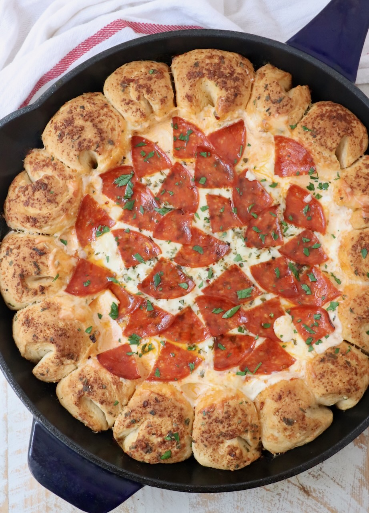

Ingredients

- FOR THE PULL-APART BREAD
- 16.3 ounce can Grands biscuit dough, 8 count
- ¼ cup melted butter
- 2 teaspoons parmesan cheese, grated
- 1 teaspoon Italian seasoning
- FOR THE PIZZA DIP
- 8 ounces cream cheese, softened
- 1 cup ricotta cheese
- 3 teaspoons Italian seasoning, divided
- 1 cup marinara sauce, or pizza sauce
- 1 ½ cups mozzarella cheese, grated
- 8 slices pepperoni, quartered (optional topping)
Instructions
1. Preheat the oven to 350°F.

2. Cut each biscuit in half, then roll each half of dough into a ball.

3. Combine the melted butter, parmesan cheese, and 1 teaspoon Italian seasoning in a bowl.

4. Roll each of the balls of biscuit dough in the seasoned butter, then arrange them around the edge of a greased large cast iron skillet.

5. In a large bowl, use an electric mixer to combine the cream cheese, ricotta cheese, and 2 teaspoons Italian seasoning.

6. Spread the cream cheese mixture in the bottom of the skillet in the middle of the balls of dough.

7. Top with the marinara sauce, shredded mozzarella cheese, and remaining 1 teaspoon Italian seasoning. Top with pepperonis.

8. Place in the oven and bake for 25-30 minutes.